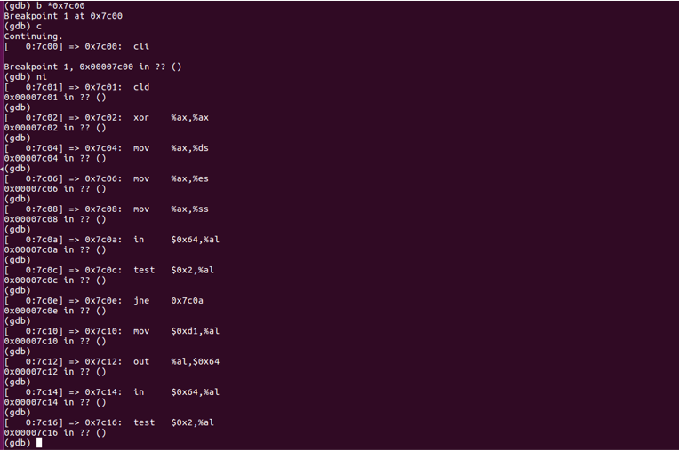
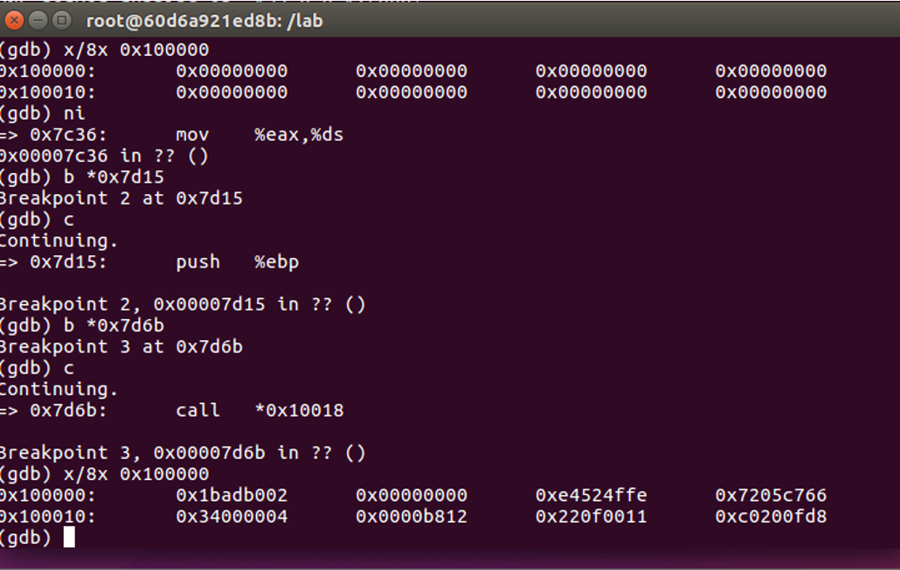
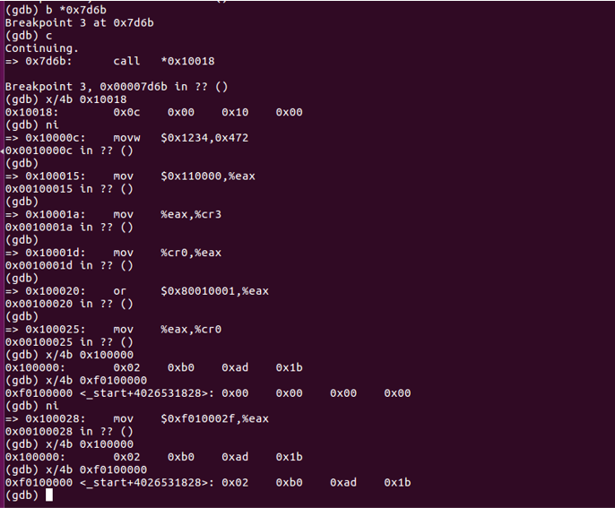
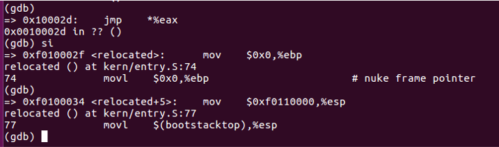

Booting a PC
Overview
This post records my experiment process which was based on MIT
6.828. Basically, the order of the introduction in this post
follows the sequence of the implementation periods.
What's more, I think one of my best friend achieve a better review job. This is his post
Recommended Books
- CSAPP
- 汇编语言（王爽）
- 程序员的自我修养：装载、链接和库
Preliminary Knowledges
Layout of physical address space

- The first PCs, which were based on the 16-bit Intel 8088 processor, were only capable of addressing 1MB of physical memory. (0x00000000~0x000FFFFF)
- "Low Memory" was the only random-access memory (RAM) that an early PC could use
- The 384KB area from 0x000A0000 ~0x000FFFFF was reserved by the hardware for special uses such as video display buffers and firmware held in non-volatile memory. The most important part is the Basic Input/Output System (BIOS), which occupies the 64KB region from 0x000F0000~0x000FFFFF. In early PCs the BIOS was held in true ROM, but current PCs store the BIOS in updateable flash memory.
- The BIOS is responsible for performing basic system initialization
- After performing this initialization, the BIOS loads the operating system from some appropriate location such as floppy disk, hard disk, CD-ROM, or the network, and passes control of the machine to the operating system.
- Modern PCs have a "hole" in physical memory from 0x000A0000~0x00100000, dividing RAM into "low" or "conventional memory" (the first 640KB) and "extended memory" (everything else). (ensure backward compatibility with existing software.)
- In addition, some space at the very top of the PC's 32-bit physical address space, above all physical RAM, is now commonly reserved by the BIOS for use by 32-bit PCI devices.
- Because of design limitations JOS will use only the first 256MB of a PC's physical memory anyway, so for now we will pretend that all PCs have "only" a 32-bit physical address space.
GDT

- SEG is used to construct GDT, which is defined in
mmu.h. - At the boot loader part in the experiment process, we look back to this.
CR registers family
Process
- Layout picture about CR registers family.
- CR family is one of the important themes about booting process, we
will meet the member of
CRfamily many times.
BIOS
After we enter into JOS(experiment platform used in this class), we can walk around and check what we got.

- We can read these instructions to figure out what had happened at the very beginning of booting a PC. At this stage, BIOS is our main character.
- There are so many complicated jobs. And I just have look through several beginning steps roughly, then I jumped over this process.
- To jump over this process, set a breakpoint at
0x7c00, then let it go, it will head to the entry point of next stage.
The Boot Loader
- The main tasks of the boot loader can be concluded as two parts:
switch mode and load the kernel.
- First, the boot loader switches the processor from real mode to 32-bit protected mode, because it is only in this mode that software can access all the memory above 1MB in the processor's physical address space.
- Second, the boot loader reads the kernel from the hard disk by directly accessing the IDE disk device registers via the x86's special I/O instructions.
- Boot loader is loaded by the former process and called by the former main character: BIOS.
- Here are some basic knowledges:
- Floppy and hard disks for PCs are divided into 512 byte regions called sectors. A sector is the disk's minimum transfer granularity: each read or write operation must be one or more sectors in size and aligned on a sector boundary.
- If the disk is bootable, the first sector is called the boot sector
- Here is my experiment result at this stage:

Switch Mode
- Disable interrupts & String Operations increment.
- Clear segment registers.
- Enable A20 (polling method).
lgdt gdtdescload information ingdtdesc(next slide) into GDTR(in CPU).- After that use three instructions to set up
cr0’s lowest(0) bit (PE, protected mode enable). Ljmp $PROT_MODE_CSEG, $protcsegsimply jump to next instruction, but in 32-bit code segment. Switches processor into 32-bit mode. We can check this at following picture.

- The relevant knowledge about
GDTandcrregisters family, we can check at the preliminary knowledge section.

- Here comes the highlight part of this periods: set up the protected-mode data segment registers.
- We are now at the end of the
boot loader. We have to assign the control to the next part. - If something went wrong, loop.
Loading The Kernel
- Kernel image must be ELF format("Executable and Linkable Format")(More details: 程序员的自我修养）
- VMA(link address) & LMA(load address)
- The link address of a section is the memory address from which the section expects to execute.
- The linker encodes the link address in the binary in various ways, such as when the code needs the address of a global variable, with the result that a binary usually won't work if it is executing from an address that it is not linked for. (Modern PIC tech is used solve this)
- Typically, the link and load addresses are the same.
- The source code of this part is in
main.c, we can check the simplify introduction at its beginning:
We are going to travel through this file and gain the insight about the process which is aimed at loading the kernel.
- Read 'count' (para) from kernel image into physical address 'pa'(para).
- Using
readsect:
readsectusing a 'low-level' method to achieve the target that reading a sector into physical address space.waitdiskusing the idea ofpolling.

"readseg((uint32_t) ELFHDR, SECTSIZE*8, 0);"reading the first page (1 page= 8sectors).ELF_MAGIC, member ofELF32(64)_Ehdr, contained in the member e_ident . The beginning 4 bytes is0x7F, 0x45, 0x4c, 0x46.(In ascii, DEL, 'E', 'L', 'F'.).- Interesting fact
a.outis 0x1, 0x7; PE/COFF is 0x4d, 0x5a aka 'M', 'Z' in ascii. ELF32_Ehdrtell use_phoff(start of program headers) ande_phnum(Number of program headers). Using this to index the program headers in the kernel image.- Using members in
Elf32_Phdr(program header),p_pa(physical, LMA),p_memsz(size of segment),p_offset(offset of segment in kernel image). e_entry, the member ofElf32_Ehdr. (VMA of the entry, for relocatable file aka*.oin linux*.objin windows, is 0).
- Deeper into base, we can check the content in
obj/boot/boot.asmwhich came fromboot.Sandmain.cafter compilation. - Loading the kernel into disk involved with plenty of
I/Ooperation, and it need lots of knowledge about the base of the system. Here, I highly recommended you read it but in a overview way. - Take a notice on the address, when we travel through
qemu-gdb, we can check the consistence about the address. - Step further, give an eye about following variation about the
content in address
0x100000which reveal the changing of memory mode.

- The phenomenon above showed that the success about mode switching and the right of control has been transferred to the main character of the next stage: kernel
Kernel
At first, go around in the gdb, you can check new change
about the content inferred by the same address when we pass by some
'magic' instructions.

- Attention at the content at
0xf0100000and0x100000. Check the difference around the "magic instructions":
mov $0xf010002f, %eax- Same as before, this variation revealed the mapping method has been changed.
- Actually the instruction above isn't the core part of the magic, it's just the "signal step" which represents the conversion between former mapping method to virtual memory mapping.
- New mapping mechanism was actually set up at the moment just after
mov %eax, %cr0 - Let's step further in the source code to dig more detail about this "magic".


- Use
eaxto load the physical address ofentry_pgdirinto cr3 which is defined inentrypgdir.c.Fromgdbwe can tell thatentry_pgdiris0x110000. We can also check this fromobj/kern/kernel.asm - And we're gonna set cr0 with
orl $(CR0_PE|CRP_PG|CRP_WP)PE represents "protection enable", PG represents "Paging", and WP represents "Write Protect". After that, the new mapping is established. (Look back to the picture at preliminary knowledge)


- What happened here is the same as what had happened when we entered into protection mode. Just jump to the next instruction.
There is still a final task needs to be done by kernel: build up the stack.


The process obey the following steps:
- Clear
ebp. - Set
esp(we can check it atobj/kern/kernel.asm) - note here: KSTKSIZE=8 page size
- Parameter about the stack JOS build
- Virtual address:
0xf0108000-0xf0110000 - Physical address:
0x00108000-0x00110000
- Virtual address:
And here is a schematic diagram about the layout of the stack:

To be continued
This paper ignore plenty of details about Lab 1, such as
VA_LIST part and etc.